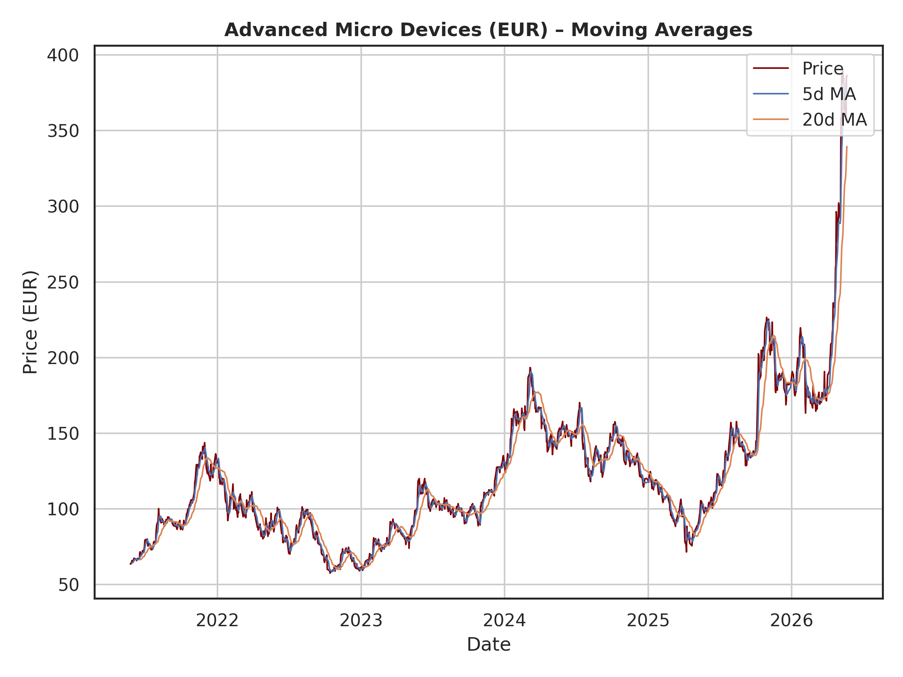
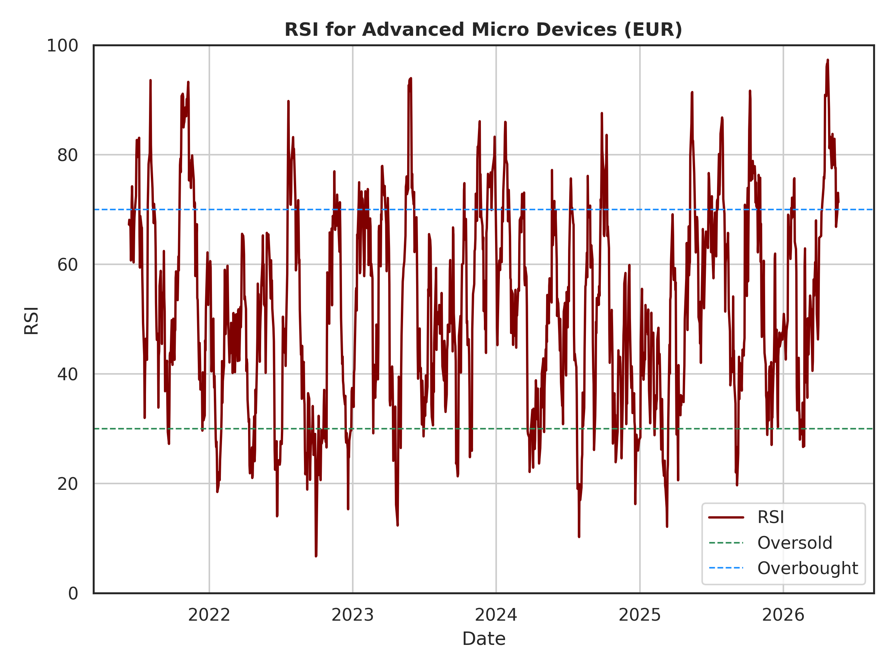
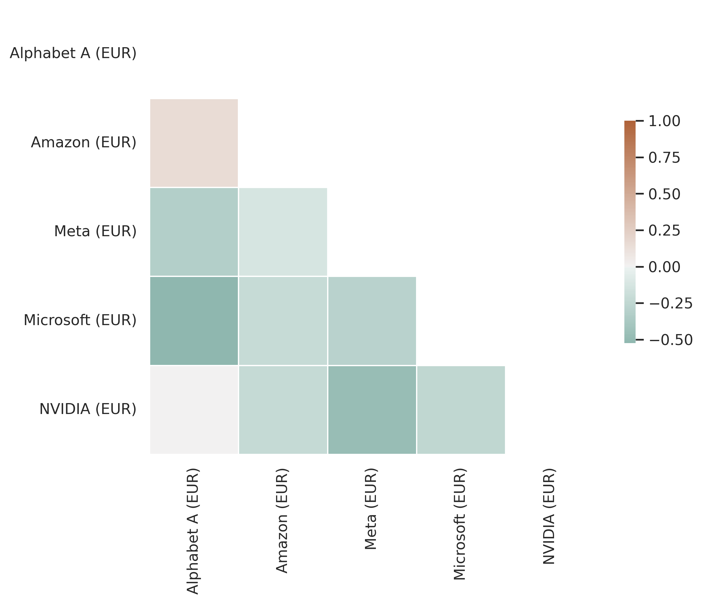
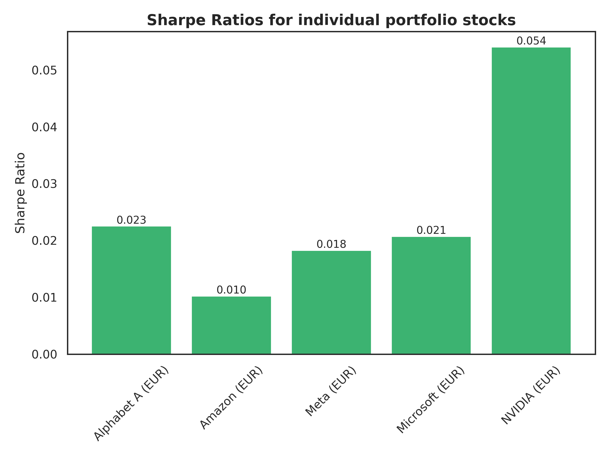
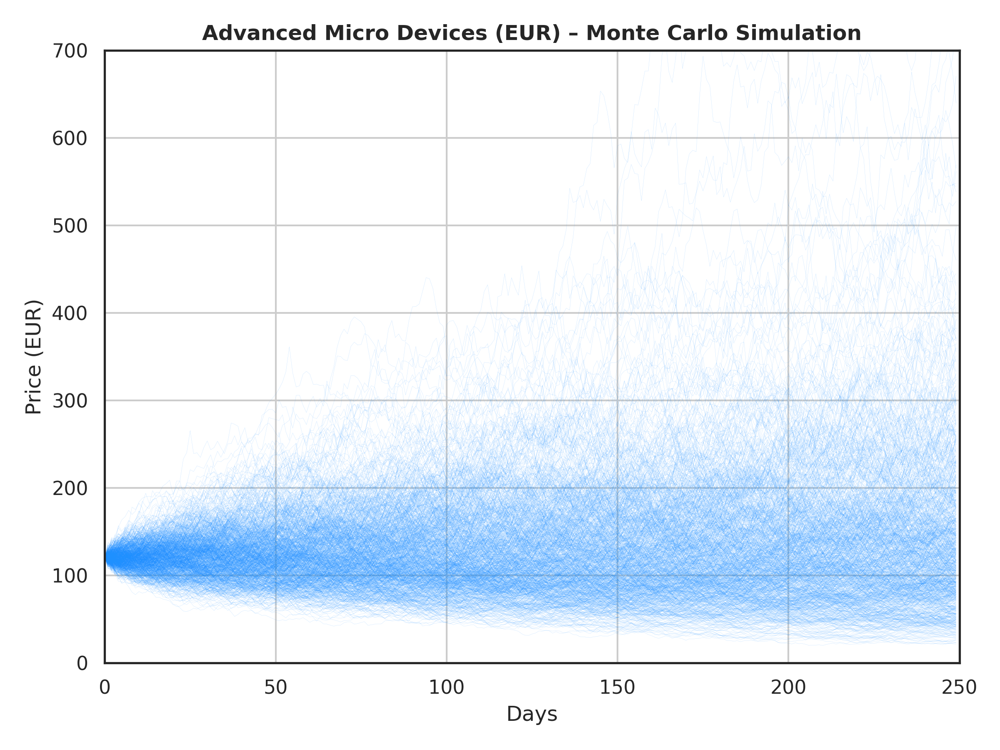
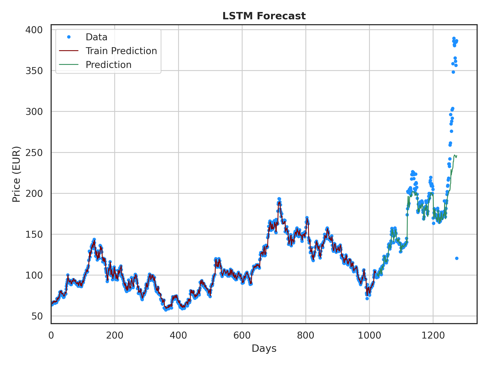

StkView | A Quantitative Analysis Framework for Financial Time-Series
StkView is a comprehensive quantitative tool designed to transform raw stock-price data into actionable financial insights. It integrates a full pipeline—from data engineering to deep learning—providing a robust environment for risk management and predictive modeling.
Core Capabilities:
Data Engineering Pipeline:Automated ETL process that cleans and normalizes raw CSV data, including date parsing, type conversion, and mean-imputation to ensure data integrity for downstream calculations.
Quantitative Analysis & Statistics:Rapid generation of descriptive statistics (central tendency, dispersion, volatility) to establish a baseline for asset behavior.
Technical Indicator Suite:Implementation of key momentum and trend indicators, including: SMA (Simple Moving Average): For trend identification and crossover signal generation.

RSI (Relative Strength Index):To identify overbought/oversold conditions and market momentum.

Portfolio Optimization & Risk Metrics:
Weighted Portfolio Construction:Calculation of daily returns based on custom asset weights.
Risk Assessment:Computation of portfolio volatility and Value at Risk (VaR) at configurable confidence levels.
Correlation Analysis:Heatmap visualization to detect systemic risk and diversification opportunities.

Performance Benchmarking:Calculation of the Sharpe Ratio to evaluate risk-adjusted returns.

Probabilistic Forecasting:Monte Carlo simulations using log-normal price movements to perform stress testing and scenario analysis.

Deep Learning Predictions:An integrated LSTM (Long Short-Term Memory) neural network that captures non-linear temporal dependencies for advanced price forecasting.

Summary:
StkView.py bridges the gap between raw market data and quantitative decision-making by unifying statistical analysis, risk modeling, and AI-driven forecasting into a single, streamlined workflow.
GitHub: github.com/markus-schindler/StkView